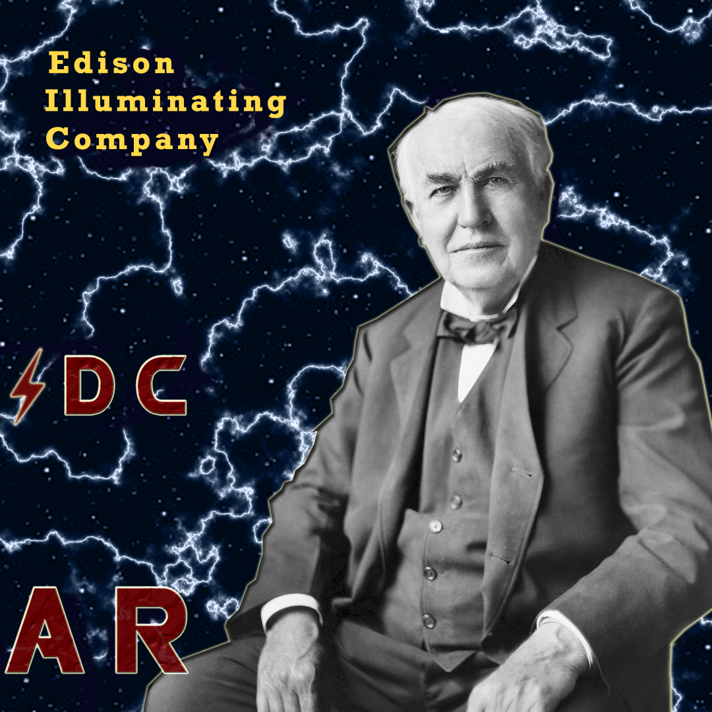

Война Токов. Часть ⚡: Томас Эдисон

Искусственное освещение давно стало неотъемлемой частью нашей жизни. На улицах городов, в наших домах, да даже в космосе, везде сияют тысячи ламп. Искусственный свет позволяет нам работать по ночам, делает улицы менее страшными и меняет наши циркадные ритмы. Все это стало возможно благодаря Томасу Эдисону.
Саму идею электрической лампочки придумали задолго до Эдисона. Еще в 1840 году была представлена первая лампочка, однако в ее конструкции использовалась очень дорогая платина, что помешало ее коммерческому распространению. К тому же, у них был очень короткий срок жизни и высокие требования к напряжению сети. Именно Эдисон в 1878 году изобрел лампу накаливания, которая вместо платины использовала угольную нить, которая была гораздо дешевле и обеспечивала более долгий срок жизни.
Сразу же после публичной демонстрации Эдисон основал Edison Electric Light Company, которая занималась установкой электрического освещения в различных предприятиях. А в 1880 году была основана Edison Illuminating Company, основной целью которой была установка уличного освещения в городах США.
Эдисон не был первопроходцем и в этой области. В некоторых городах уже использовалось дуговое освещение, но оно требовало огромного напряжения в 1200 вольт и представляло опасность возгорания. Компания Эдисона же использовала постоянный ток, для которого требовалось всего 110 вольт. Помимо этого для передачи электричества использовались изолированные провода, что позволяло безопасно проводить его не только на улицы, но и в дома.
Эдисон установил генераторы постоянного тока в крупных городах США и захватил рынок искусственного освещения на ближайшие 10 лет. Однако, у постоянного тока был огромный недостаток, необходимость поддерживать постоянное напряжение в 110 вольт сильно снижало радиус его передачи. Электростанции могли обеспечивать электричеством только тех кто находился в радиусе 1.5 км. Это сильно ограничивало распространение освещения по стране. В середине 80-х у Эдисона появился первый соперник в борьбе за рынок освещения, но подробнее об этом в следующий раз...
Article: Quasar
Preview: Quantum